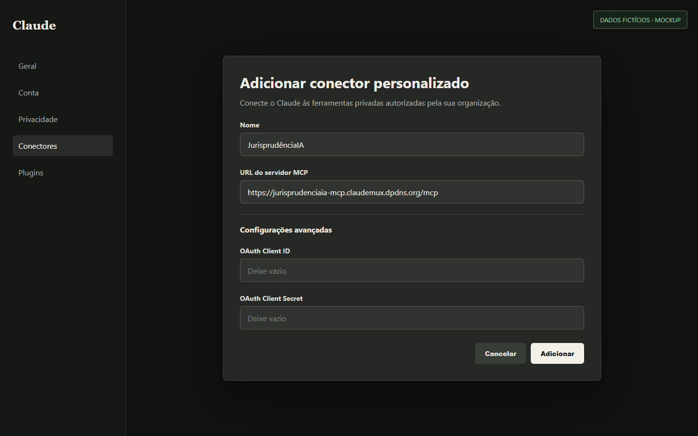
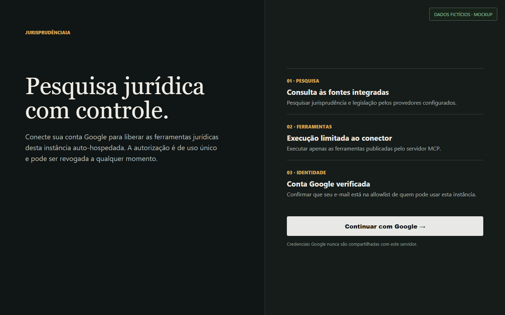
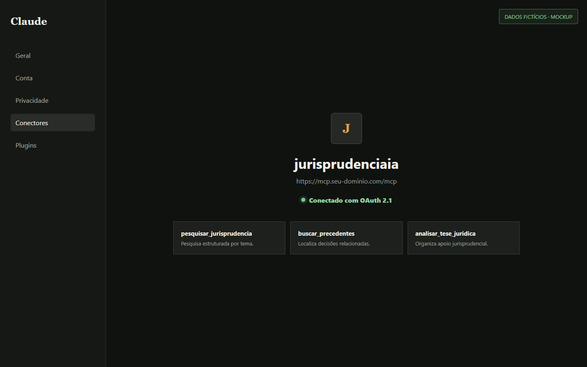

Antes de começar: peça ao administrador para autorizar sua conta Google. Ele não precisa enviar nenhum segredo; basta confirmar que seu e-mail está na lista privada.
Adicione o conector no Claude
- Abra Configurações > Conectores.
- Escolha Adicionar conector personalizado.
- Use o nome
JurisprudênciaIA. - Cole somente a URL abaixo.
- Deixe Client ID e Client Secret vazios, mesmo que os campos apareçam nas configurações avançadas.
https://mcp.seu-dominio.com/mcp

Autorize com Google
- Clique em Adicionar e depois em Vincular, se o Claude mostrar os dois passos.
- Na página privada, revise as permissões e clique em Continuar com Google.
- No Google, escolha a conta autorizada.
A tela de seleção de contas não aparece neste guia de propósito: ela pode revelar nome, e-mail, avatar e outras contas abertas no navegador.

Confirme a conexão
Ao retornar ao Claude, o conector deve aparecer como conectado. Abra uma conversa nova antes do primeiro uso para garantir que a lista atual de ferramentas foi carregada.

Primeiro teste
Em uma conversa nova, peça explicitamente uma ferramenta do conector:
Use pesquisar_jurisprudencia para pesquisar responsabilidade civil por negativação indevida e dano moral.
O que nunca deve aparecer em um print
- Nome, e-mail ou avatar real
- Seletor de contas Google
- Client ID ou Client Secret
- Token, cookie ou código OAuth
- ID de conta ou projeto Cloudflare
- Referência de erro ou suporte